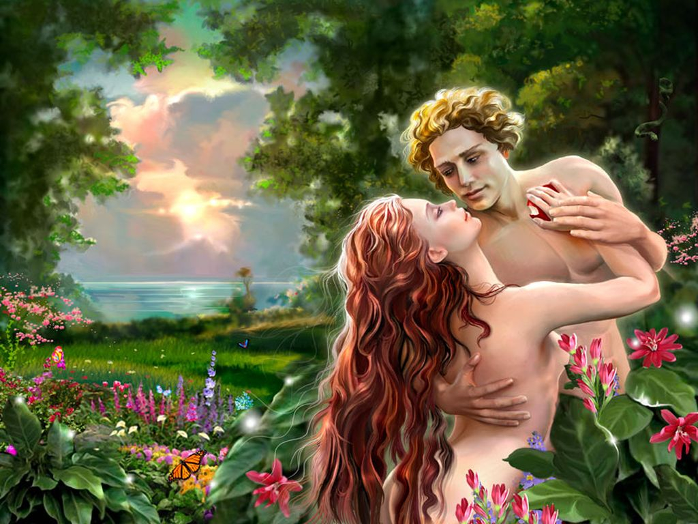
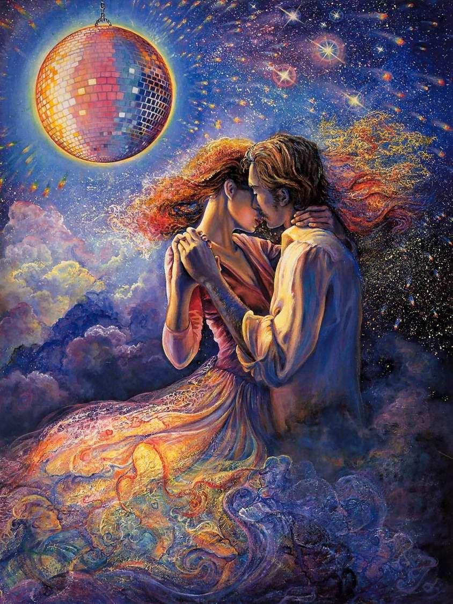
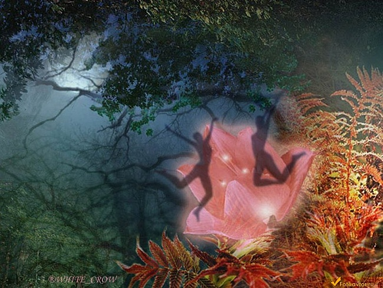

Радуга любви
Любовь – прекрасное все то, что есть на Свете,
Любить – Дар свыше дан с Небес,
И берегите, люди, это в Солнечном всё цвете!
Приблизьте Образы красот-чудес -
Все это замысел Богов и Их творенье,
Прикосновение энергий радуги Любви,
И звезды в Вечности спокойной
Сверкают состоявшейся мечты!
О, Радуга Любви,
Ты так прекрасна,
Царишь в Небесной вышине,
Мелодию Вселенной создавая
При Солнце и Луне,
Как будто струнами играет
Луч Солнца золотой
И их цветные все перебирает
Любовь приходит вновь и вновь!
И над планетой словно купол,
В размахе радужном видна,
И в красках песнь любви слышна,
Где над Землею Суть – Небес – вся красота!
Душа, наполненная песней
Поднимет ввысь свои глаза
Увидит Храм там Солнечной дороги
И крикнет во всю мощь «У-Ра!»,
И радостно напившись от красоты,
Мы думаем все о природных тех Дарах,
Что посылают нам высоты,
Что Силы нам дают в земных делах.
Храните Радугу Любви вы в сердце,
И пусть играет луч в нем золотой,
Хранимы будете Родными вы Богами,
Душа не будет злой, пустой.
Она наполнится молитвами природы
И с пониманьем чувства разовьет,
Настанет миг тот счастья, что синей птицей,
В радужных лучах почувствует полет!
2001 г.
Инь - Янь, Он и Она
Она – вода чиста,
Она – прекрасна как Луна,
И локоны Ее, что волны океана,
И руки так мягки,
Скользят по телу без обмана и просят…
И тут же отдают весь всплеск любви.
На теле всем ее прозрачном,
Искрится серебристая роса,
И каплей аромата,
Все завлекает, бегущая струя,
И с лаской посылает взгляд,
Свои бездонные, как моря синь, глаза,
И хохотом своим все заливая,
Как будто бы журчание ручья.
А, Он – огонь сияет, золотится,
Он Солнцем весь искрится,
И в шепоте Его костра тепло таится,
А значит, жизнь в Божественном огне хранится.
Прикосновенье Его рук,
И от горячих поцелуев губ,
Все таять начинает,
Небесными очами, любовь он посылает.
Тогда Она все понимает,
И жаром вся Ее душа пылает,
И так по жизни вслед за Ним шагает.
Он – Небо, а Она – Вода,
Он – Воздух, а Она – Земля,
Но друг без друга никуда,
В энергии стихий все красота,
Рождается любовь тогда.
На звездной поляне блистающих грез,
Цветы всей любви, собирали они.
И будто бриллианты, в бусы вдевали,
И Душу любовью свою украшали.
В сплетенье в том вечном
Огня и Воды,
В творении Бога:
Жар Солнца, Холодность Луны,
И в этом вся Сила Любви!
Танцуя, кружась, в объятиях круга,
Без остатка себя, отдавая друг другу,
То, пламя огня обжигает внутри и снаружи,
То, тут же холодной волной затопляет,
Горячим лучом чистит души!
И, тут же, все сердце росой освежает,
То, разгорится вновь, и обожжешься,
И с тихим шелестом прибоя улыбнешься!
Вот Инь – все женское начало,
Все обаяние, красоту нам показало.
И Янь – мужское сотворенье,
Духовное успокоенье.
В гармонии любви – Божественный Венец,
Как создал в Мире жизнь Творец,
В любви пылающих сердец,
Пусть создаются множество таких колец!
1 декабря 1997 г.
Любовь
I
Души порывы взмолились к вышине
Как всё не просто! В тишине
Мир зародился…, на Земле
В прохладной утренней заре.
Любовь взмолилась Богу Роду:
«Как всё перевернулось с той поры!
Меня направил к людям дарить свои лучи
Я их укрыла оберегом Твоёго Света
Частички всем я раздавала, огненного цвета,
Не удержались в яркости огня
И начали все гнать меня!
От зла лишь над Землёй туман,
Где Клевета и брат её – Обман»!
И сквозь завесу эту, чтоб любви пробиться
Хватать не стало сил,
Любовь бежала к своему Творцу
Прижалась вся комочком, как дитя к Отцу,
И не поняв, сей нрав людской
Осталася сама с собой.
Ответ пусть и не ищет сквозь толпу и грёзы
Тот человек обидевший любовь,
Он не увидит её слёзы,
Но не придёт она когда-то, вновь!
Любовь уходит не спеша,
Надеясь, что позовёт её к себе душа
И когда её теряет человек,
Ничему не рад в свой век!
Любовь умылася слезами
С тоскою о родной Земле,
Прости, что чувства не сдержали,
Что причинили боль тебе!
Быть может, Бог пошлёт прощенье,
И вновь почувствуют все люди
Любви прекрасной возвращенье!
II
И вновь весной в объятия летит
Любовь, Её златая нить!
И ласково, тепло всем говорит:
«Огонь пусть вечный мой
Во всех всегда теперь горит!
Под золотыми Купалами
Небесными долинами-шатрами,
Чудесный вырос чудо-лес
И храм божественной Любви воскрес!
Примите ж, люди, дар сей дорогой!
Любимыми все будете, и будете любить
И в радость благодать творить!»
Любовь спустилася с небес
Вся в огненном и звёздном одеянье,
Корзину принесла с собой чудес
Семян любовного очарованья!
Она засеяла их по Земле,
Чтоб выросли Любви-плоды
Чтоб люди всей Земли
Любить по-настоящему смогли! (2005г.)
Берёзовый сок
О, Лада – Богородица!
Твоей берёзовой водицы,
Дай, пожалуйста,
Из небесного ковша напиться!
В ней чистота вся нежная струится!
И пыл любви, начал судьбы
Соединяя воедино
Хрусталь прозрачности
Долин небесных
И золото полей хлебов Земли чудесной,
Что в аромате утопает
Путь весь Млечный
От хвойных солнечных тех слёз прелестных.
И в предрассветной тишине
В Купалу-ночь
Соединяясь при Луне
Бог – Сын, Богиня – Дочь…
В объятиях, целуясь у цветка
Напившись из небесного ковша
И создавая третьего собой –
Творят Вселенные Душой.
Где нитью золотой
Сплетают колыбель мечтой!
Мечта творенья и полёта
Как Птица счастья над Землёй
Летит всей радостью дарящего восхода
И гладит ласково божественной рукой.
И зародился МИР,
«в начале было слово»…,
Но слово было от мечты,
Что МЫСЛЬ породила – суть Любви!
Любви той искренней
Божественной и Вечной, Отца Души!
В твореньи двух начал
Магнит космический причал,
Хоть мир разнообразен двух сердец
Участвует в гармонии колец.
В ковше небесном – жизни сок
Наполнен светом Вед,
Чтоб каждый человек
Продолжить смог свой Род и Круголет!
24.04.2004 г.
В Купальскую ночь

Июньским тёплым вечерком
Пустила ты венок,
И искоркою шепотка
Слилася с ветерком!
Вода обнялася с травой
Цветы коснулися мечты…
И показалися Любви огни!
Душа метнулась в вышину
И солнце встретила звезду
И миг настал желаний
Где чувствами свиданий
Соединятся две души родные
Творить, любить и созидать
Богами славными хранимы!
2006 г.